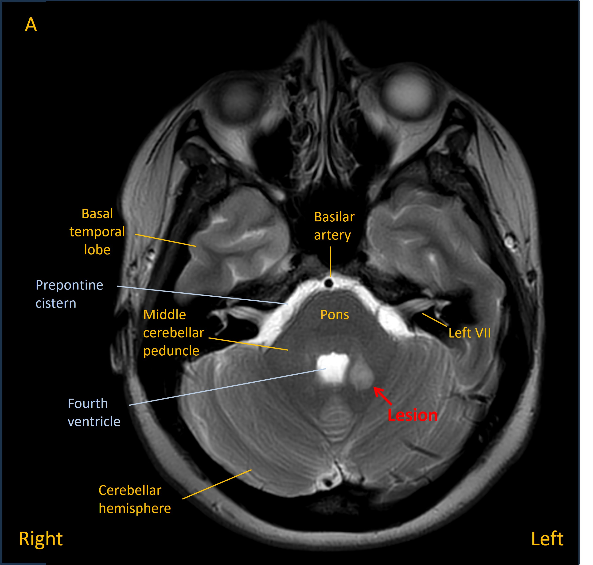
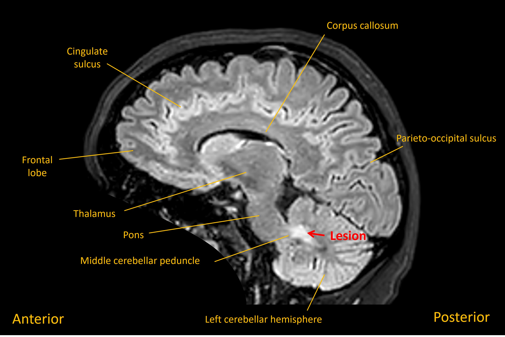
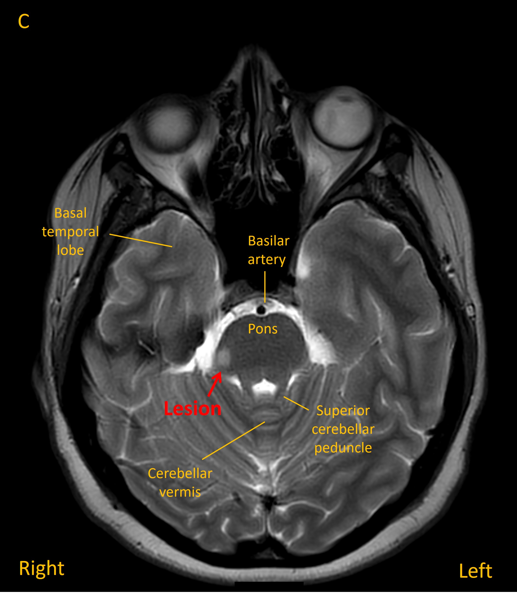

Case 15 - Dizziness and clumsiness
Outcome
She was admitted and had an MRI brain which showed a lesion in the left middle cerebellar peduncle adjacent to the fourth ventricle. Imaging features suggested a solitary demyelinating lesion – and in the absence of other lesions, or prior symptoms, this was not in keeping with a diagnosis of multiple sclerosis (MS).


She was given a course of oral steroids. Her symptoms improved partially in the coming days, though she still experienced residual left-sided clumsiness. She had a lumbar puncture which showed unmatched oligoclonal bands. This suggested a tendency to recurrent attacks of central nervous system demyelination, though on its own did not qualify for a diagnosis of MS.
However, two months later she reported deterioration in her gait, with falls at home. On examination she had a cautious-looking gait, taking small steps, and bilateral heel-shin ataxia on examination, but no focal signs otherwise. An MRI showed a new lesion in the right dorsolateral superior pons. The previous cerebellar lesion was still present, but less hyperintense than earlier. Additional small lesions were noted in the periventricular region.

On the basis of a new demyelinating lesion separated across time, additional clinically-silent new periventricular lesions appearing on the MRI, and the CSF analysis, she was diagnosed with MS. Given the two events a short number of weeks apart, the diagnosis was of rapidly-evolving MS, so she was started on a highly-effective oral treatment. Her condition was stable on follow-up over the following 2 years.
Final diagnosisTwo episodes of demyelination affecting the posterior fossa, separated over time, due to highly-active MS.
Key points